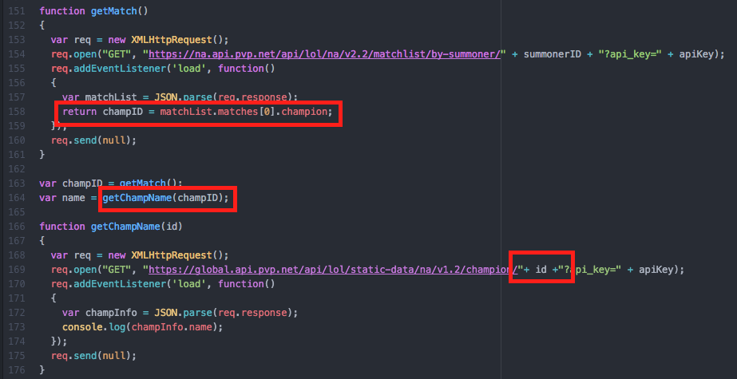

The Nature of Asynchronous Requests
Control flow becomes important when we start linking our AJAX requests
Linking Requests
We saw to get data on a match we first had to make a call to the matchlist endpoint, find the correct match Id and then use that to query the matchData endpoint. But what if we don't want to make a call to MatchList, then make a call to matchData? What if we want to let our script handle everything?
Retrieving A Champion Name
Although none of the syntax is new this is a slightly different way of presenting AJAX requests. Here we're using the riot matchList and static-data endpoints to now get the champion name from our most recent game. We're wrapping our first request to matchList inside a function that returns the variable (matchId) that is to be included in the url for the second request.
This is a really powerful tool as we start building web applications. Although it is beyond the scope of this guide, we can conceive of a site that asks a user for their summoner name and uses linked requests to retrieve the type of data they want. We have to be wary, however, because we can run into some issues doing this. Let's take a look at the result.
Control Flow
Linking asynchronous requests is really valuable but we have to make sure that if a second request relies on the data from a succesful first request that it does not start executing before that data can be returned. We call this managing control flow.
Well this isn't ideal. To understand this think back to when we talked about callbacks. We mentioned how code beyond the callback will execute while the callback is waiting for our request to finish. We never had code after our callback so it wasn't a problem. Here, however, we've continued on and sent our champID variable to the next request before the request can assign the variable any actual data. We thus pass an undefined variable into the second request which causes an error.
Fixing our Problem
The first fix we'll introduce involves directly delaying our second request so that it must execute after the first request. To do this we use a function called setTimeout().
1. Introducing a Delay
Let's start with what's changed. Notice we've commented out our old function call and now instead of passing our returned champion ID as a parameter we're using it as a global variable in the url. ChampID, however, will still be undefined if we make our second request immediately. As a result we need to use a function called setTimeout. SetTimeout() prevents a passed function from executing until after a supplied timer finishes. Here we're preventing our getChampName function from executing for two seconds giving our first request ample time to finish. This ensures our champID parameter has received a value from the first get request and is no longer undefined. This is a way to make sure simple requests take place one after another. As we've seen above, however, we sometimes tend to do alot of object manipulation within the callback. If we're looping through frames and searching for data the request may take a variable length of time.
The second fix involves a more advanced way of addressing control flow called a Promise. Promises can get very complicated so if this is something you are keen on using please click the link below to get a more thorough understanding of how they work.
2. Promises
We can see in this fiddle we've now added a new return that returns a promise object and have two new conditionals, a fail and a succeed. Promises wrap an asynchronous request around an object thus allowing us to conditionally execute consective requests based on the success or failure of our object action. We're not going to go into too much more detail about how this works but let's briefly touch on how the promise is affecting the control flow.
The next method we have used allows us to use the return value from our promise if the request was succesful (if unsuccesful it will call an error condition). We have now thus made a conditional statement based on the completion of the first requst. Finally, we use the result of our promise to extract the champion ID and pass it to our second query to get the champion name. Using promises in this way allows us to create many types of linked requests that could allow a user to get all sorts of information with just their summoner name.